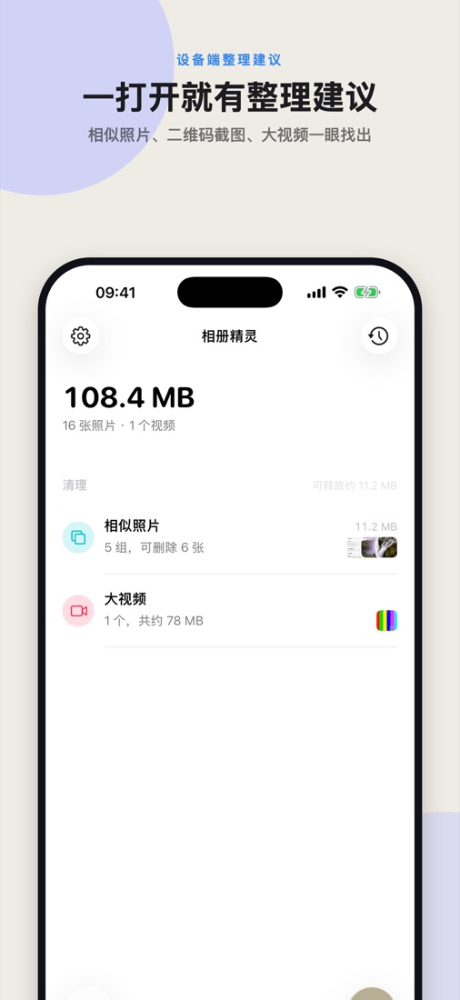
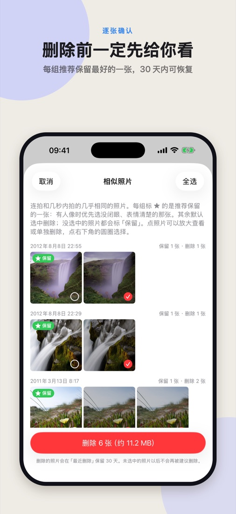
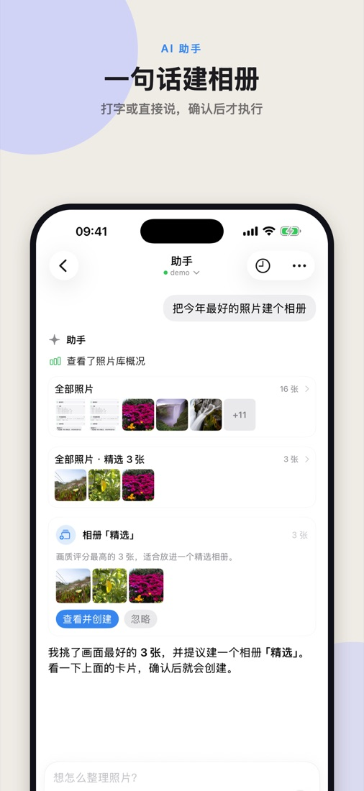
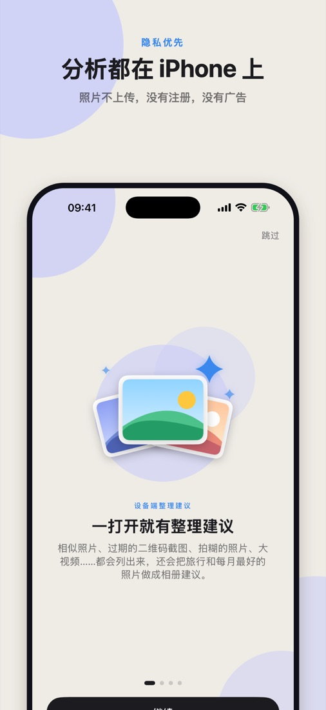

iPhone 照片整理
照片越来越多，
空间越来越少？
相册精灵帮你一眼找出该删的、该留的：相似照片、过期二维码截图、拍糊的照片、大视频，还能一句话建相册。分析都在 iPhone 上完成，照片不上传。
App Store 即将上架正在 App Store 审核中 · 支持 iOS 26 及以上 · 简体中文 / English




🧹
一打开就有建议
相似照片、二维码截图、旧截图、模糊照片、大视频，按能腾出的空间排好。
👀
删除前先给你看
每张都能放大查看、单独删除；iOS 会再确认一次，30 天内可恢复。
💬
一句话交给助手
打字或直接说，助手找照片、做成提议卡片，确认后才执行。
🔒
照片不上传
画质、人脸、内容、文字和二维码都在本机识别；没有注册、广告和统计。
设备端整理建议
一打开就有整理建议
首次打开时在 iPhone 上逐张分析，之后只处理新照片。建议按类别列好，点一行就能看照片。
- 相似照片：每组推荐留下最好的一张，有人像时优先没闭眼、表情清楚的
- 二维码截图：用过的门票、登机牌、付款码，一周后一键清理
- 旧截图：30 天前的截图，可按图中文字搜索
- 模糊或拍坏的照片、大视频
- 每月精选、旅行相册：自动挑出最好的照片
逐张确认
删除前一定先给你看
每个建议都先列出照片：点一下全屏放大，左右滑动，视频可以直接播放。不想删的取消选择即可。
- 没选中的照片都会标「保留」，推荐保留的那张标 ★
- 删除时 iOS 会再确认一次，照片进入「最近删除」保留 30 天
- 你保留下来的照片，以后不会再被建议删除
AI 助手（可选）
一句话建相册
「今年去过哪些地方？每个地方挑 10 张最好的建相册」「我截图过一个 Wi-Fi 密码，帮我找出来」——助手用设备上分析好的信息找照片，把建相册、删除做成卡片等你确认。
- 支持语音输入、朗读回复，还能像打电话一样连续对话
- 用你自己的 API key（Anthropic、OpenAI、Google Gemini、OpenRouter、DeepSeek），或用 ChatGPT、GitHub Copilot 等订阅账号、OpenRouter 账号登录
- 默认选便宜的小模型，每次花费清楚可见；也可以用 OpenRouter 的免费模型
- 历史对话随时可以接着聊
隐私优先
照片的分析都在你的 iPhone 上完成，结果只保存在本机。我们没有服务器，不收集、不出售任何数据。只有当你主动使用助手时，你的消息和照片的统计信息才会用你自己的 API key 或账号，直接发送给你选择的 AI 服务商。